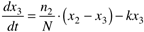
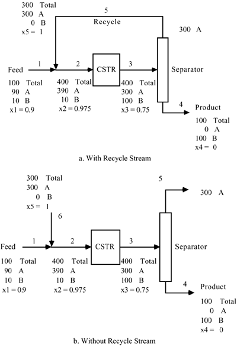
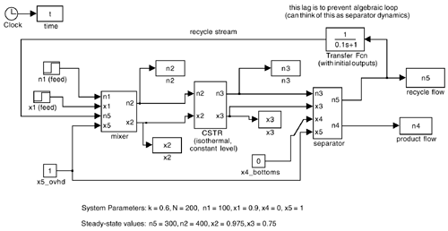
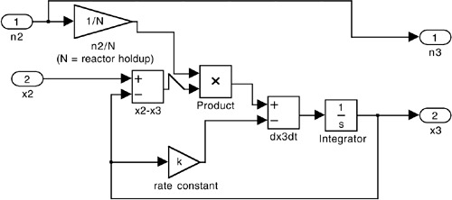
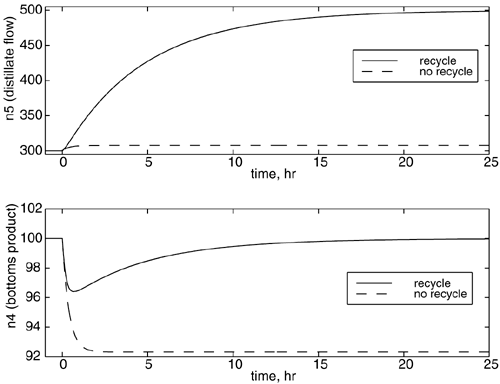

| [ Team LiB ] |
|
15.6 SimulationsSIMULINK provides a nice modeling environment for simulating very simple process flow sheets. For rigorous process design and analysis, chemical process flow sheeting packages such as ASPEN PLUS and HYSYS should be used. Flow sheets can quickly be developed using standard "icons" that represent unit operations, such as reactors and separators. This next example illustrates the use of SIMULINK to solve a flow sheet similar to Example 15.1.
Example 15.6: A Simple Recycle SystemHere we consider a slightly different steady state than that shown in Figure 15-3. In Figure 15-23 the make-up feedstream (stream 1) has 0.9 mole fraction A. The CSTR has a molar holdup of N = 200 moles and a reaction rate constant of k = 0.6 hr-1. One of our objectives is to compare the responses of the flow sheets with and without a recycle stream, to disturbances in the fresh feed (stream 1) composition. A SIMULINK .mdl for the recycle system dynamics is shown in Figure 15-24, where the mixing point, the CSTR, and the separator are "masked" functions. The CSTR is "unmasked" in Figure 15-25, to reveal the modeling equation  Figure 15-23. Flow sheet example. Steady-state flows shown. Figure 15-24. SIMULINK diagram (.mdl) for the dynamic flow sheet. Figure 15-25. Unmasked view of the CSTR block in Figure 15-24. Consider a step change in the feed composition of A from 0.9 to 1.0 mole fraction. The results for the recycle system are compared with the "straight through" system without recycle in Figure 15-26. Notice that the recycle system has a tremendous change in the separator product stream (recycle flow) compared to the no-recycle case. As discussed in Section 15.2 (and Example 15.2), the recycle system has a large gain and time constant compared to the system without recycle. Figure 15-26. Response to a step disturbance in the feedstream composition of A (from 0.9 to 1.0) at t = 0 hr. Comparison of recycle with no-recycle systems. Top plot: distillate product flow rate (n5). Bottom plot: flow rate of product B (n4). |
| [ Team LiB ] |
|